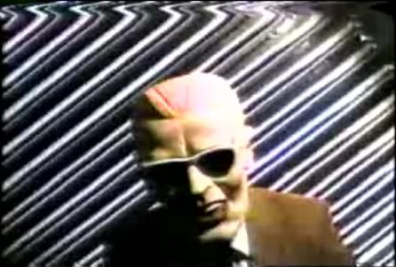
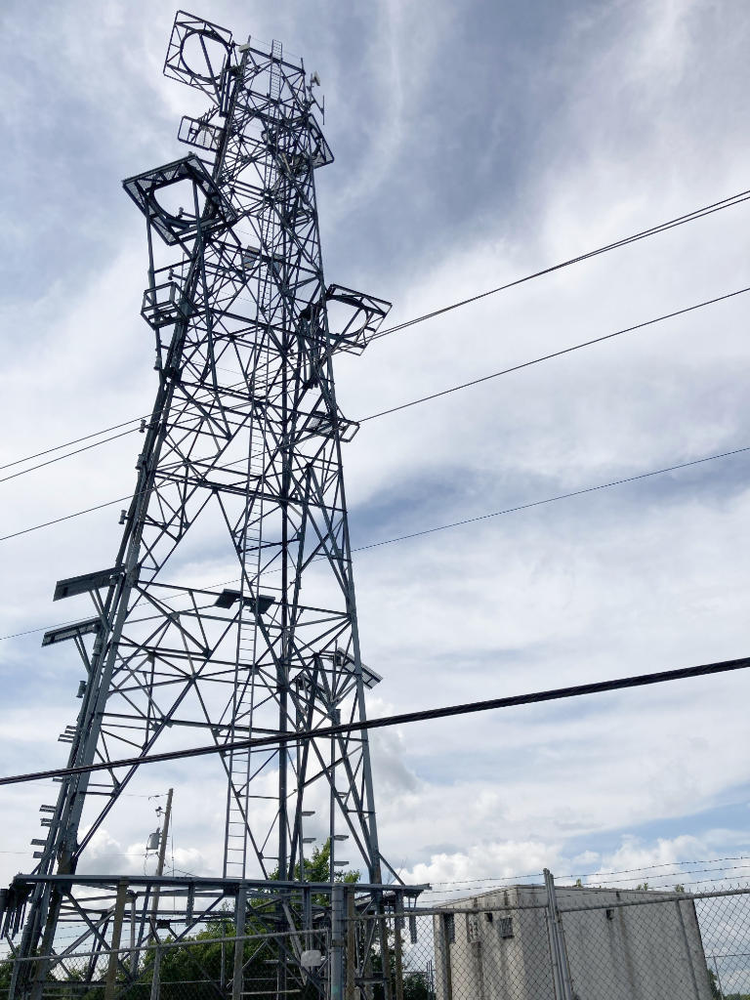
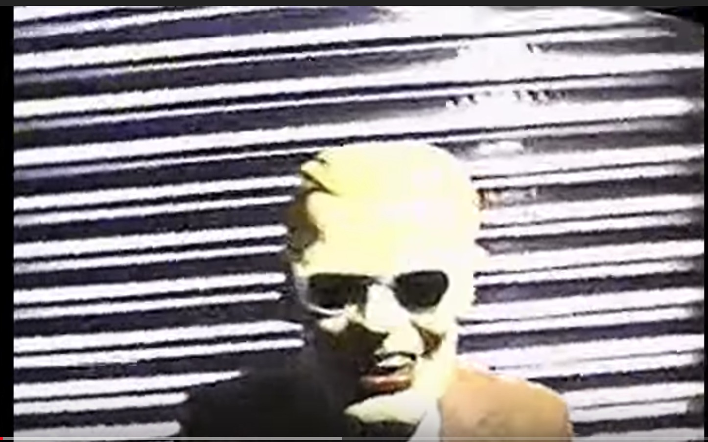

The Signal Intrusion
Chicago, Illinois — November 1987

The Event
For 90 seconds, the broadcast of WGN-TV and WTTW was hijacked by an intruder wearing a Max Headroom mask. The figure appeared against a rotating corrugated metal background, uttering distorted, nonsensical phrases before the signal was restored. It remains the most famous broadcast signal intrusion in television history.
Evidence Locker


Current Theories
The Archive examines the technical precision required for such an intrusion.
- The Technical Elite The hijack required a high-powered transmitter and a clear line-of-sight to the station's receiver at the Willis Tower.
- Internal Sabotage Speculation suggests an individual with intimate knowledge of the Chicago television landscape and its microwave relay system.